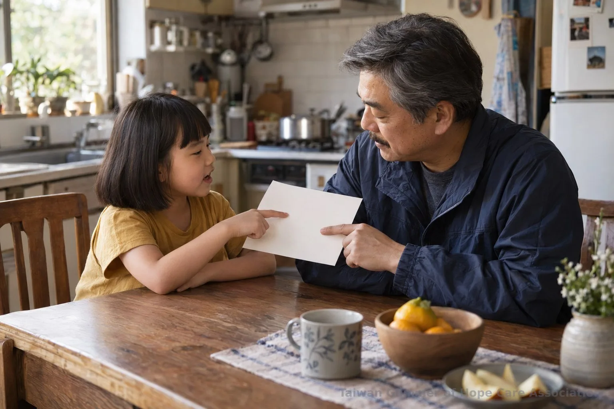
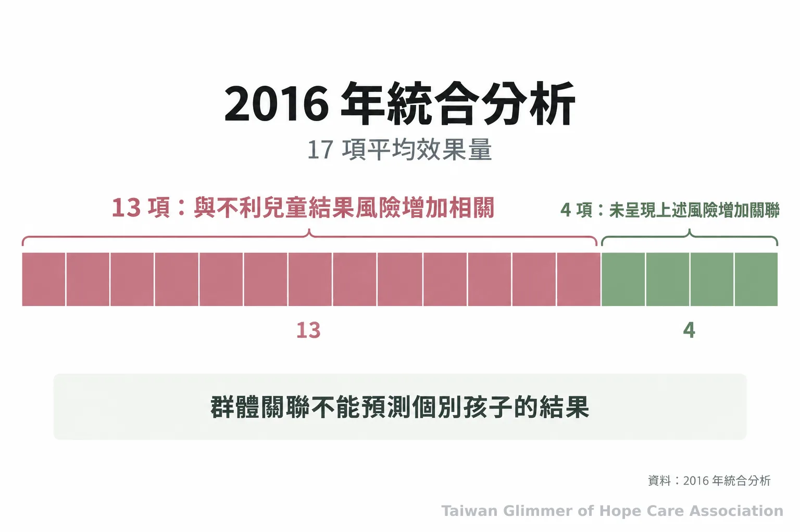
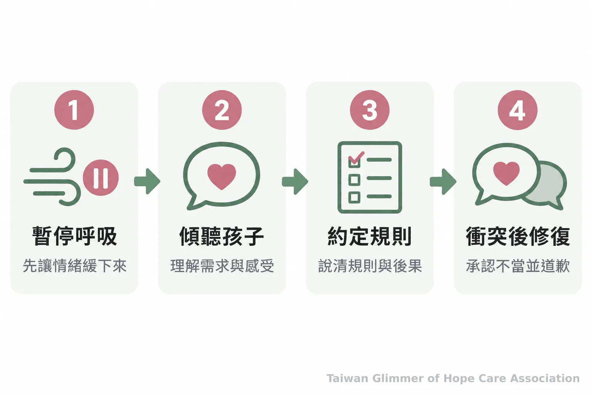

管教與體罰怎麼分？正向管教從這幾步開始
孩子不聽提醒時，家長可以怎麼管教？從兒少法與衛福部資料認識體罰界線，練習暫停、傾聽、訂出清楚規則，也知道何時向外求助。
孩子不肯收玩具、作業拖延，家長可能越說越急，甚至動手。管教是否合宜，不能只看大人的用意，也要看做法、規則是否清楚，以及孩子是否承受身心傷害。家長若覺得快撐不住，可以向外求助。
一、管教要看方式與孩子承受的影響
**管教應限於保護與教養孩子的必要範圍；用身體疼痛、威嚇或羞辱讓孩子服從，可能已越過安全界線。**大人自認出於好意，不能單獨決定一個做法是否妥當。
衛福部社會安全網建議，檢視家規是否清楚、孩子能否表達、後果是否可預期，以及大人能否保持一致。合理管教讓孩子犯錯後有機會修正；反覆、嚴苛或無法預測的責罰，可能損及自尊與健康。這些面向可供家庭檢視，法律責任仍由主管機關依事實認定。
衛福部說明，限制使用手機或電腦不等於體罰；體罰是對兒少身體施加痛苦或使其不適的暴力行為。採取任何後果，都應說明原因與期限，避免羞辱、威脅或不合比例的剝奪。

二、兒少權法怎麼規範體罰與身心虐待？
**兒少法第49條禁止任何人對兒童及少年身心虐待，衛福部也說明，體罰已納入該條身心虐待的解釋。**條文如何適用，須依事件的具體情況由主管機關判斷。
全國法規資料庫的《兒童及少年福利與權益保障法》第49條禁止任何人遺棄、身心虐待兒少等行為。依第56條，兒少未受適當照顧、需立即醫療卻未就醫，或遭身心虐待等情形時，地方主管機關應予保護、安置或為其他處置，必要時得緊急安置。違反第49條第一項各款之一，依第97條可處新臺幣六萬至六十萬元罰鍰，並得公布姓名或名稱。
法條提供保護兒少的依據，並不表示每一次親子衝突都會得到相同的法律認定。遇到具體疑問，可向地方主管機關或法律專業人員詢問；若擔心孩子正處於不安全環境，則應先尋求保護協助。
「體罰，是指對兒少之身體加諸痛苦或使其不適的暴力行為。」— 衛生福利部保護服務司
三、研究提醒風險，不替個別孩子下定論
研究回顧發現，體罰與一些不利兒童結果的風險增加有關；這是群體研究的關聯，不能據此預測每個孩子的反應。
Gershoff 與 Grogan-Kaylor 於2016年的統合分析納入111個效果量、共160,927名兒童；17項平均效果量中，13項顯示打屁股與不利兒童結果風險增加相關。這提醒大人，打罵不能當作沒有代價的教養工具。
各研究對體罰的定義、族群、文化背景與測量方式不盡相同，也可能受其他家庭因素影響。關聯不能直接視為因果，群體結果也不能用來判斷個別家庭。身體體罰、言語責罵與其他不當對待應分開理解。

四、情緒升高時，先暫停再處理問題
先暫停，等情緒平穩後再聽孩子的想法，聚焦眼前問題，共同訂出清楚、可預期的規則與後果。
衛福部建議，情緒快爆發時先深呼吸或短暫離開；回來後詢問孩子的需求與感受，只談眼前問題，再一起想解決方法。規則要具體，例如約定玩具何時收好、沒完成時如何補做，讓孩子知道界線與後果。
若已吼叫或動手，冷靜後承認不恰當並道歉。照顧壓力累積或常靠打罵讓事情停止時，可向家庭教育中心詢問親職支持。求助不是失職的標籤。

五、有保護疑慮時，記得使用求助資源
有兒少身心虐待、疏忽或其他保護疑慮，可撥113保護專線通報或諮詢；若有立即人身安全危險，請先撥110。
衛福部保護服務司說明，113是24小時全年無休、免付費專線，受理兒少保護等事件通報與求助諮詢。兒少、承受教養壓力的家長與照顧者，以及長期處於衝突或不安全環境的兒少，都可及早尋求支持。
先挑一個常見衝突，和孩子說清楚規則、原因與後果；壓力難以承受時，可找可信任的人或專業資源一起面對。
- 管教以保護與教養為範圍，避免以身體疼痛、羞辱或威嚇要求服從。
- 情緒升高時先暫停，冷靜後傾聽、訂出明確規則；若傷害了孩子，要承認並修復。
- 有兒少保護疑慮可撥113；立即人身安全危險請撥110。
常見問題
Q1: 打小孩算體罰嗎？
衛福部對體罰的說明是，對兒少身體加諸痛苦或使其不適的暴力行為；並指出體罰納入兒少法第49條身心虐待的解釋。
Q2: 限制孩子使用手機也算體罰嗎？
衛福部說明，限制手機或電腦使用不屬於體罰定義；仍要避免羞辱、威脅或不合比例的處罰。
Q3: 體罰一定會讓孩子出現心理問題嗎？
不能這樣推論。研究呈現群體中的風險關聯，無法預測每名孩子的反應，也不能單憑研究判定個別家庭的因果。
Q4: 家長情緒失控後可以怎麼補救？
先等情緒平復，再向孩子說明自己哪個行為不恰當並道歉，接著一起談下次可以怎麼處理。
Q5: 擔心孩子安全時該打哪裡？
可撥113保護專線通報或諮詢；有立即人身安全危險時，請先撥110。
參考資料
- 全國法規資料庫。《兒童及少年福利與權益保障法》。https://law.moj.gov.tw/LawClass/LawAll.aspx?pcode=D0050001
- 衛生福利部保護服務司（2023）。衛生福利部澄清，父母教養兒少採取「限制使用（手機、電腦）」並非「體罰」。https://dep.mohw.gov.tw/DOPs/cp-1318-74098-105.html
- 衛生福利部社會安全網（2019）。父母親應如何區分合理管教與身心虐待？https://topics.mohw.gov.tw/SS/cp-4530-50102-204.html
- 衛生福利部保護服務司（2026）。春節教養五大心法 理解孩子安心過年。https://www.mohw.gov.tw/cp-16-85389-1.html
- Gershoff ET, Grogan-Kaylor A. (2016). Spanking and child outcomes: Old controversies and new meta-analyses. Journal of Family Psychology, 30(4), 453–469. https://pubmed.ncbi.nlm.nih.gov/27055181/
- 衛生福利部保護服務司（2024）。113保護專線介紹。https://dep.mohw.gov.tw/DOPs/cp-1183-6499-105.html
好好當家長｜系列三之 1
本文同步刊於 appi.news。